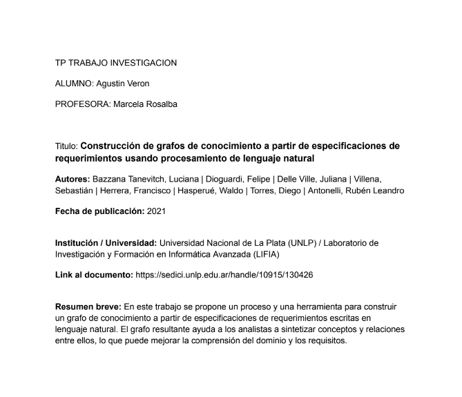
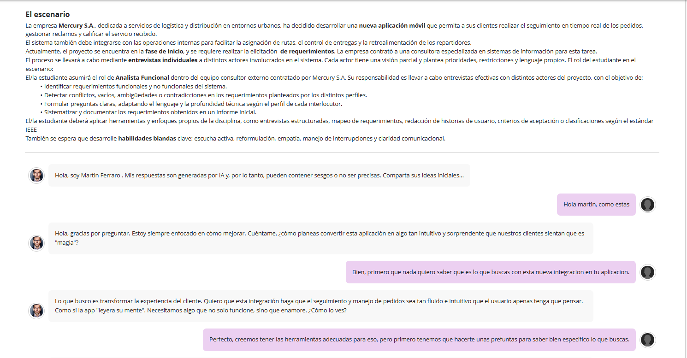
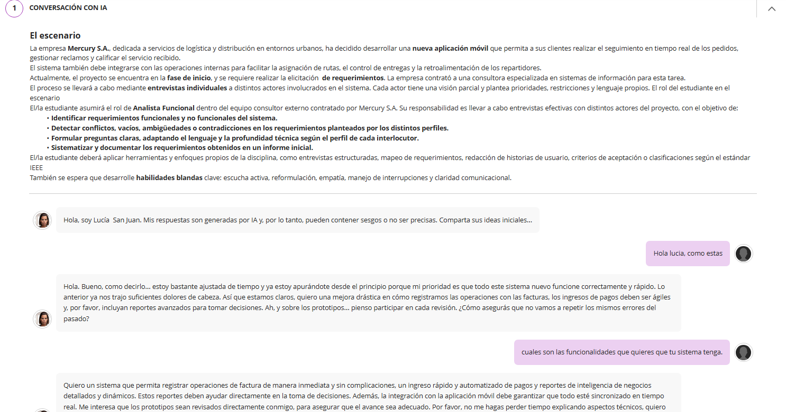
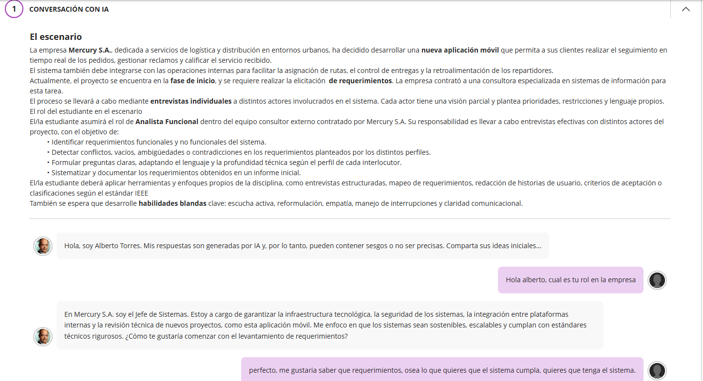

Estudiante de Ing. Sistemas Informaticos
Facultad Abierta Interamericana
Este es mi portafolio donde presento una selección de mis trabajos y proyectos más importantes de la materia de Ingenieria de Requerimientos, materia dictada por la Docente Marcela Rosalba Samela
Actividad grupal en la que habia que completar un cuadro comparando el software con objetos y proyectos tangibles e intangibles, tambien seleccionar 2 cualidades del software que un sistema que nosotros elijamos tenga.
Integrantes:(Agustin Veron-Facundo Venezia-Juan Ignacio Diaz-Martin Lopez-Santino Mangiante)
Aportar un trabajo de investigación relacionado con la Ing. de Requerimientos y el Lenguaje Natural y realizar un resumen breve.
 Ver PDF del Trabajo ↗️
Preguntas en grupo para responder en la plataforma sobre los requerimientos en el ciclo de vida.
Integrantes:(Agustin Veron-Facundo Venezia-Juan Ignacio Diaz-Martin Lopez-Santino Mangiante)
Desarrollo en grupo de un enunciado que sirve como caso de estudio para llevar a cabo las entregas de las consignas solicitadas.
Integrantes:(Agustin Veron-Facundo Venezia-Juan Ignacio Diaz-Martin Lopez-Santino Mangiante)
Ejercitacion obligatoria grupal en el que identificamos requisitos funcionales y no funcionales, y detectar ambiguedades de un requerimiento.
Integrantes:(Agustin Veron-Facundo Venezia-Juan Ignacio Diaz-Martin Lopez-Santino Mangiante)
Ejercitacion grupal de elicitacion y especificacion de requerimientos de un sistema de turnos en una institucion de salud.
Integrantes:(Agustin Veron-Facundo Venezia-Juan Ignacio Diaz-Martin Lopez-Santino Mangiante)
Conversacion con IA ficticia en la que hay que actuar como Analista Funcional para entrevistar a un empleado de una empresa imaginaria para hacerle una elicitacion de requisitos del sistema. Primera Parte
 Ver PDF del Trabajo ↗️Conversacion con IA ficticia en la que hay que actuar como Analista Funcional para entrevistar a un empleado de una empresa imaginaria para hacerle una elicitacion de requisitos del sistema. Segunda Parte
 Ver PDF del Trabajo ↗️
Análisis y Elicitación de Requisitos, incluyendo la identificación de stakeholders y la definición de las cualidades de calidad del software. El proyecto se presentó mediante un Podcast del Ingeniero que aplica el léxico teórico de la asignatura.
Integrantes:(Agustin Veron-Facundo Venezia-Juan Ignacio Diaz-Martin Lopez-Santino Mangiante)
Especificación de Requisitos Funcionales y No Funcionales aplicando el estándar IEEE. Se modelo el sistema mediante Casos de Uso, Historias de Usuario y Escenarios basados en el TP grupal
Integrantes:(Agustin Veron-Facundo Venezia-Juan Ignacio Diaz-Martin Lopez-Santino Mangiante)
Conversacion con IA ficticia en la que hay que actuar como Analista Funcional para entrevistar a un empleado de una empresa imaginaria para hacerle una elicitacion de requisitos del sistema en este caso al Jefe de Sistemas. Segunda Parte
 Ver PDF del Trabajo ↗️